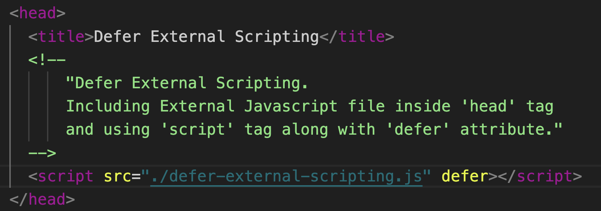

The defer attribute tells the browser not to wait for the script. Instead, the browser will continue to process the HTML, build DOM. The script loads “in the background”, and then runs when the DOM is fully built.
Scripts with defer never block the page.
Scripts with defer always execute when the DOM is ready (but before DOMContentLoaded event)
The page content shows up immediately.
DOMContentLoaded event handler waits for the deferred script. It only triggers when the script is downloaded and executed.
